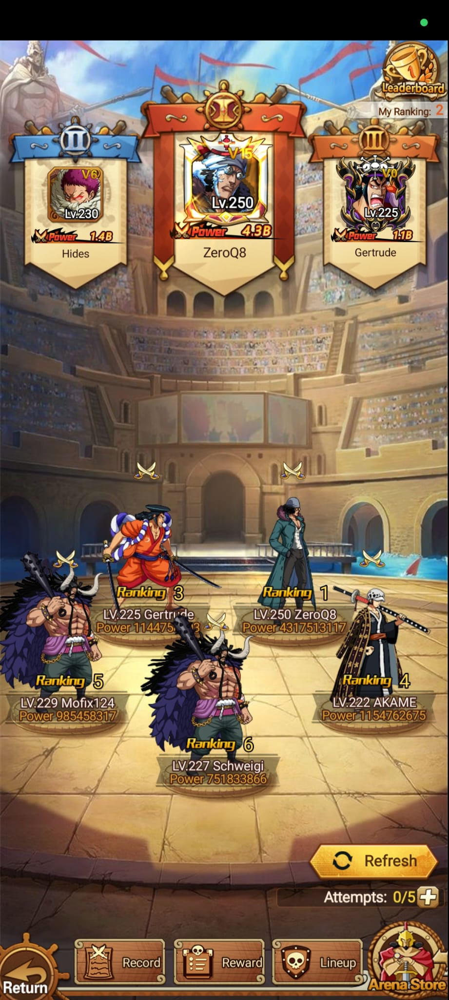
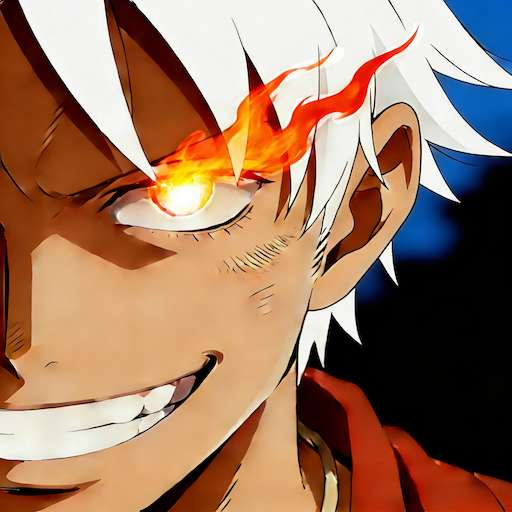

Captura
Ranking y rivales


Idle Pirate WikiPvP y clasificación
La Arena muestra el ranking de jugadores, rivales disponibles, intentos restantes, historial, recompensas, formación y tienda de arena.
Captura

Lectura del sistema
La esquina superior derecha muestra My Ranking: 2. Esto indica la posición actual del jugador dentro de la clasificación de Arena.
La pantalla muestra Attempts: 0/5. El formato indica intentos actuales sobre el máximo disponible para atacar o retar rivales.
La zona central muestra rivales seleccionables con ranking, nivel, nombre y poder. El botón Refresh probablemente actualiza esta lista.
Top visible
| Ranking | Jugador | Nivel | VIP | Poder visible | Lectura |
|---|---|---|---|---|---|
| 1 | ZeroQ8 | Lv.250 | V15 | 4.3B | Líder del ranking y jugador más fuerte visible. |
| 2 | Hides | Lv.230 | V6 | 1.4B | Jugador actual. Está segundo pese a tener menos poder que ZeroQ8. |
| 3 | Gertrude | Lv.225 | V0 | 1.1B | Tercer puesto, cercano al poder del jugador actual. |
Diferencia de poder
| Jugador | Poder | Comparado con Hides | Conclusión |
|---|---|---|---|
| ZeroQ8 | 4.3B | Mucho mayor que 1.4B | Probable rival difícil sin mejora grande de poder. |
| AKAME | 1154762675 | Menor que Hides | Rival posible para mantener o subir ranking. |
| Mofix124 | 985458317 | Menor que Hides | Rival más cómodo por poder visible. |
| Schweigi | 751833866 | Menor que Hides | Rival visible más débil de la captura. |
Rivales visibles
| Ranking | Jugador | Nivel | Poder | Notas |
|---|---|---|---|---|
| 1 | ZeroQ8 | Lv.250 | 4317513117 | Primer puesto visible y rival más fuerte de la captura. |
| 3 | Gertrude | Lv.225 | Parcialmente tapado | El poder aparece parcialmente tapado por el personaje. |
| 4 | AKAME | Lv.222 | 1154762675 | Rival visible a la derecha. |
| 5 | Mofix124 | Lv.229 | 985458317 | Rival visible a la izquierda. |
| 6 | Schweigi | Lv.227 | 751833866 | Rival visible en la parte inferior central. |
Botones
Actualiza la lista de rivales disponibles.
Abre el historial de combates de arena.
Consulta recompensas de ranking o premios de temporada.
Permite ajustar la formación usada en Arena.
Tienda específica del modo Arena.
Intentos disponibles. En la captura aparece 0/5.
Flujo recomendado
Guardar ranking, intentos disponibles y rivales visibles.
Registrar equipo usado, enemigo elegido, turnos y resultado.
Anotar cambio de ranking, recompensa y consumo de intentos.
Pendiente de confirmar
Falta confirmar si los 5 intentos se reinician diario o por temporada.
Falta capturar la pantalla Reward para saber premios por ranking.
Falta capturar Arena Store para conocer moneda, objetos y precios.